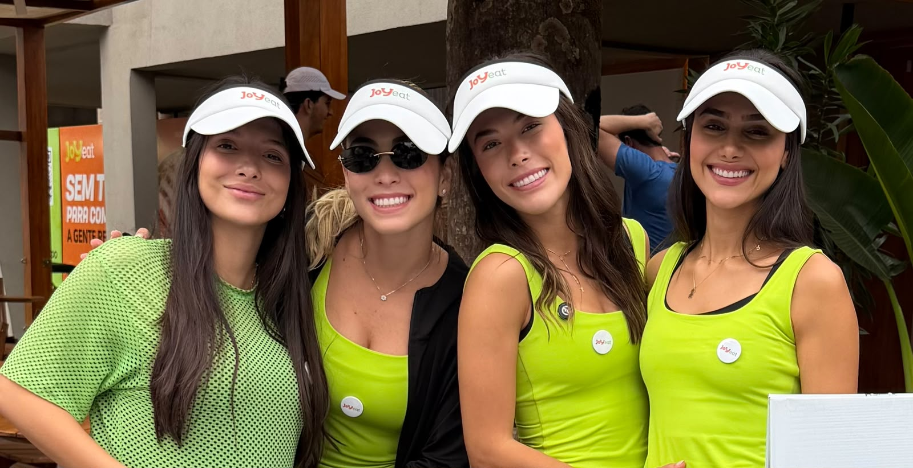
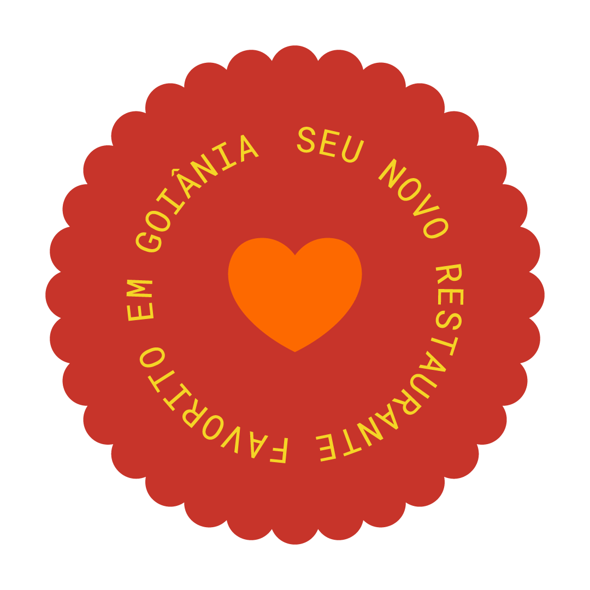

O Joy Group nasceu para isso: reunir marcas que colocam a sua saúde no centro de tudo, na comida, na suplementação e em tudo que vier depois.
A JoyEat é o ponto de encontro entre tempo e cuidado. Comida de verdade, feita para a vida real.
É em Deus que depositamos a confiança por tudo o que fazemos.
Comer com saúde deve ser uma opção disponível para todos.
A entrega dos pratos deve ser tão rápida quanto saborosa.
Valorizamos o que cada um entende como comida saudável.
Nossos pratos têm procedência e queremos que todos saibam.
Inovação em cada prato, sempre surpreendendo em variedade.
A JoyEat nasceu da vida real: da falta de tempo, da vontade de comer bem e do cuidado com quem a gente ama.

Se não serviríamos para nossa família, não servimos para ninguém.
Maria EduardaSaúde para quem mais importaSaudável precisa sustentar. E encantar.
NathaliaSaudável e gostoso de verdadeSaúde não é radicalismo. É equilíbrio.
VitóriaEquilíbrio entre saúde física e mentalAgilidade também é uma forma de cuidado.
IsabelaAgilidade sem abrir mão do cuidadoEm tempo de
Você tem o direito de saber exatamente o que está comendo. Aqui, nada é escondido: só leveza, clareza e verdade do prato à entrega.
Mostramos cada ingrediente com transparência total.
Explicamos como cada prato é preparado.
Opções claras para alergias e dietas especiais.
Nossa equipe tira qualquer dúvida sobre o que você come.
Fruta de verdade, adoçada com mel.
Tropical e refrescante, equilibrada pelo mel.
Laranja, limão, gengibre, cúrcuma e canela.
Limão, pepino, abacaxi, couve e hortelã.
Base, proteína, toppings, molho e crunch, do seu jeito.
Ovos, abacate e pão de fermentação natural.
Proteína grelhada, arroz integral e legumes.
Couve, abacaxi, gengibre e hortelã.
Placeholders coloridos. As fotos reais dos pratos entram aqui quando você enviar.
Finalmente um saudável que sustenta.
Rápido, gostoso e sem culpa.
Confio porque sei o que estou comendo.
Suplementos limpos, com o mesmo propósito da JoyEat: cuidar da sua saúde de verdade, por dentro e por fora. Sem fórmula genérica, sem ingredientes que ninguém entende.
Disposição para o seu dia, sem estimulantes pesados.
Para o corpo relaxar e a mente desacelerar.
Força, resistência e vitalidade em qualquer idade.
Sim. Vários pratos são desenvolvidos com baixo teor de carboidratos, sinalizados com a tag Low Carb.
Sim. Temos opções 100% vegetais em todas as categorias, sinalizadas com a tag Vegano.
Sim. Selecionamos pratos sem ingredientes com glúten, sinalizados com a tag Sem Glúten.
Sim. Nossas porções saciam de verdade, com equilíbrio entre proteínas, fibras e boas gorduras.
Não usamos conservantes artificiais. Priorizamos ingredientes frescos.
Sim. A JoyEat está disponível para delivery. Plataformas e áreas em breve.
Procuramos pessoas que acreditam que comida de verdade transforma vidas. Se cuidado e agilidade te movem, seu lugar é aqui.
Tudo começa com um gesto.
É isso que move a Joy.

O tempo pode ser curto. O cuidado não precisa ser. A Joy existe para tornar essa escolha mais simples, gostosa e possível.